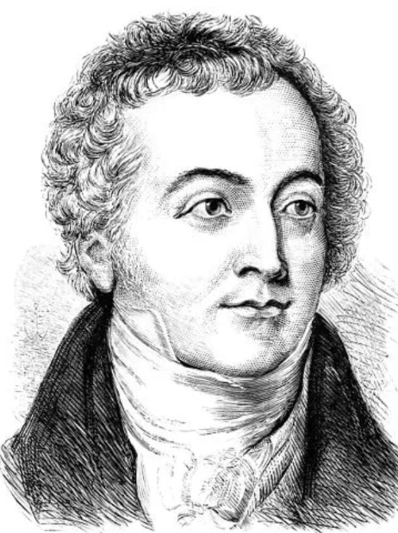

Origem
A teoria ondulatória afirma que a luz é uma onda, assim como o som também é uma onda. Este modelo teve como base de sustentação o Experimento de Thomas Young (1773 – 1829), conhecido como Experimento da Fenda Dupla, realizado em 1801, que envolvia os fenômenos da difração e interferência da luz. Começou a tomar corpo na segunda metade do século XVII, quando já se pesquisava uma analogia entre as ondas de água, o fenômeno sonoro e a propagação da luz.
Com o tempo a teoria ondulatória foi consolidada e, posteriormente, descobriu-se que a luz era uma onda de natureza eletromagnética que vibrava transversalmente em relação a sua propagação. Portanto, segundo a teoria ondulatória, a luz é uma onda de origem eletromagnética que se propaga em qualquer meio, inclusive no vácuo.
Influenciado pelo trabalho desenvolvido pelos gregos, o físico inglês Isaac Newton (1642 – 1727) formulou um modelo para explicar a natureza da luz, conhecido hoje como "a teoria da natureza corpuscular da luz." Este modelo sobre a luz consiste num fluxo de partículas muito pequenas (microscópicas) que são emitidas por fontes luminosas. A idéia de partícula agradou muito a Newton, pois encaixava-se em sua concepção de mundo, isto é, um modelo mecânico, determinista, de corpos materiais em movimento, onde seria possível determinar várias grandezas ao mesmo tempo. Além disso, através do modelo corpuscular sobre a natureza da luz, Newton conseguia explicar fenômenos físicos como a reflexão e a refração, já conhecidos na época. A grande base de sustentação da teoria formulada por Newton estava, justamente, no prestígio que conquistou perante a sociedade científica de sua época e de gerações de cientistas depois dele. A obra de Isaac Newton é considerada uma das mais belas formulações científicas já elaboradas pelo homem e, certamente, o modelo corpuscular foi sustentado devido a este enorme prestígio conquistado. No entanto, não só fama e prestígio conquistou Newton. Houve ferrenhos debates científicos, discussões envolvendo Newton e sua teoria corpuscular, principalmente, com seu maior desafeto: Robert Hooke. Dessa relação cientificamente conturbada com Hooke nasceu a discussão sobre a natureza da luz.